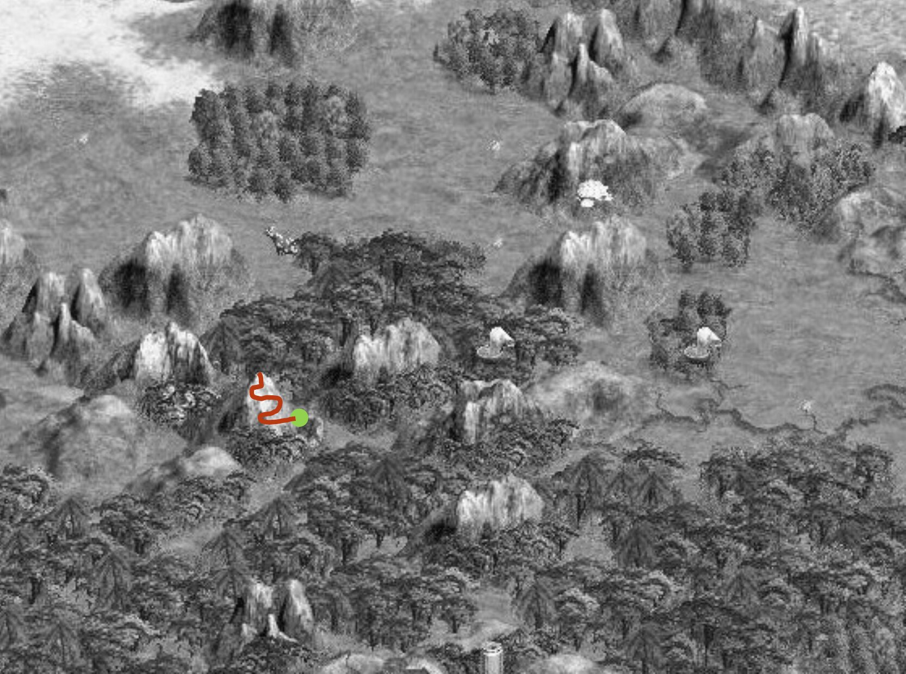

Lecture title slide: Combinatorial Libraries. A link to the course YouTube playlist for this lecture.
Directed Evolution

Last time we talked about directed evolution, which involves optimizing some nascent activity through the introduction of iterative small perturbations. These mutations are generally introduced through error-prone PCR, and the improved variants are identified by screening methods.
The fitness landscape from the previous lecture, with a single marker part-way up one hill: directed evolution starts from one sequence that already works a little and walks it uphill in small steps.
Combinatorial Libraries
RFPGFPphoA
This is in contrast to combinatorial methods in which often a preexisting activity is not present, and a sparse grid of library members is generated to make a large leap in function or to systematically explore a region of sequence space.
The same landscape, sampled instead of climbed: a regular grid of library members dropped across a whole region of sequence space, with other known activities — RFP, GFP, phoA — sitting on separate peaks elsewhere on the map.
Engineering Methods
Combinatorial Libraries
Usually involves large libraries (>106) and selections
Used to find activities that do not pre-exist
Typically involves a single round of mutagenesis
Directed Evolution
Usually smaller libraries (<105) and screens
Used to improve or modify a nascent activity
Involves iterative rounds of mutagenesis
Directed evolution experiments typically involve smaller libraries and therefore can be screened individually. They are used to improve or tweak a nascent activity, and they are usually iterative—you make small advances in fitness in each round of mutagenesis.
Combinatorial libraries typically are quite large (greater than 1 million) and therefore require selections. You can use them to find activities that do not pre-exist, and you typically do them only once. It is common to start an experiment with a combinatorial library to get an initial hit, and then optimize that hit through directed evolution methods.
The two library strategies set side by side. Combinatorial libraries: large, over a million members, read out by selection, used to find an activity that is not there yet, and usually done once. Directed evolution: smaller, under a hundred thousand, read out by screening, used to improve an activity that already exists, and done over and over.